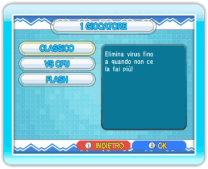
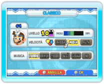
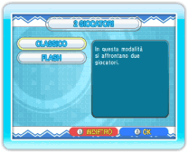
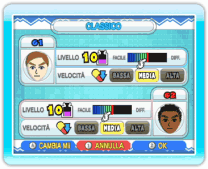

14 |
Partite 1 giocatore/ 2 giocatori (Dr. Mario) |
 |
 
● 1 giocatore Questa è una modalità per un solo giocatore. Seleziona 1 GIOCATORE dallo schermo del menu di Dr. Mario per accedere allo schermo di selezione per 1 giocatore. Ci sono tre modalità tra le quali scegliere: CLASSICO, VS CPU e FLASH. Scegli il gioco che preferisci e poi accederai allo schermo delle impostazioni di gioco. A seconda della modalità, puoi impostare il LIVELLO (numero di virus iniziali), la VELOCITÀ (velocità di caduta delle capsule) e la MUSICA. Dopo aver completato queste operazioni, il gioco avrà inizio. Nota: nella modalità Vs CPU e nella modalità Flash puoi regolare le impostazioni anche per la CPU.  
● 2 giocatori In questa modalità, due giocatori possono giocare a Dr. Mario. Seleziona 2 GIOCATORI dallo schermo del menu di Dr. Mario per accedere allo schermo di selezione per 2 giocatori. Le opzioni disponibili sono CLASSICO e FLASH. Dopo aver selezionato la modalità, puoi regolare le impostazioni per ciascun giocatore. Inoltre, puoi cambiare i Mii premendo Alla fine della partita verrà visualizzato lo schermo dei risultati. A quel punto, il giocatore 1 potrà scegliere tra RIPROVA o ESCI. Nota: in una partita a 2 giocatori, alla console Wii va collegato un secondo controller. |

 |
 |
 |